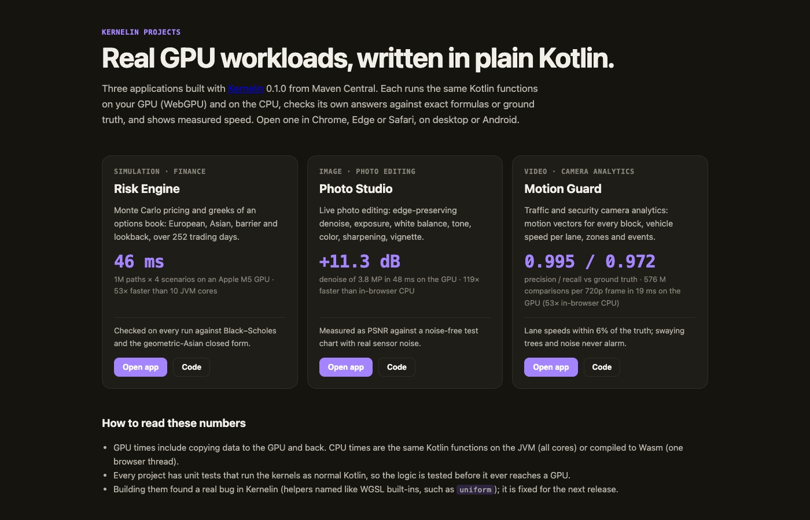

I wanted GPU code in plain Kotlin, so I wrote a compiler plugin
Every phone and laptop has a GPU that sits idle while our Kotlin code loops over arrays on one CPU core. Using it means learning a second language and pasting it into your app as a string. Kernelin removes that step: add @Kernel to a normal Kotlin function, and the compiler writes the GPU code for you.

The problem: GPU code is a second language
If you want to run a computation on the GPU from Kotlin today, you write a shader in WGSL (or GLSL, or Metal), put it in a string or a resource file, and then glue it to your Kotlin code by hand: which buffer is binding 1, which number goes into the uniform struct, in what order, with what padding.
None of that is checked by the Kotlin compiler. Rename a parameter, swap two buffers, pass an Int where the shader expects an f32 — it compiles fine, and you find out at runtime, on the GPU, where you can't set a breakpoint or print a line. And you can't unit test the shader on your laptop's CI the way you test the rest of your code.
Kotlin already has a compiler that understands every line of your code. So I asked: why not let the compiler write the shader?
The idea: one function, two places to run
You write a normal Kotlin function and mark it with @Kernel. It runs once per thread; globalId() tells each thread which element is its own.
@Kernel
fun saxpy(alpha: Float, x: FloatArray, y: FloatArray) {
val i = globalId()
y[i] += alpha * x[i]
}At build time Kernelin turns that into this WGSL compute shader (trimmed):
@group(0) @binding(1) var<storage, read> x: array<f32>;
@group(0) @binding(2) var<storage, read_write> y: array<f32>;
...
let i: i32 = i32(kernelin_id);
y[i] += (kernelin_params.alpha * x[i]);Notice that x became a read buffer and y a read_write one. Kernelin looks at how each array is used, so only arrays you write are copied back from the GPU.
Then you call it like a normal function. The compiler checks the names and types of the arguments:
val gpu = WebGpu.create() // any WebGPU browser, desktop or Android
gpu.dispatch(n) { saxpy(alpha = 2.5f, x = x, y = y) }
// the same kernel on the CPU, for unit tests
KernelinCpu.dispatch(n) { saxpy(2.5f, x, y) }That last line is the part I care about most. Your kernel is still Kotlin, so a plain JUnit test can run it on the CPU, with normal stack traces and a debugger. The logic is tested before it ever reaches a GPU.
How it works inside the compiler
Kernelin is a K2 compiler plugin. It runs inside the normal Kotlin build, after type checking, so it sees fully resolved code: every name, type and overload is already known.
- Find kernels. The plugin visits every function marked
@Kernelin the Kotlin IR (the compiler's internal tree of your code). - Translate. A translator walks that tree before the platform backends lower it, so loops,
&&,++and+=still have their source shape. Each expression becomes a WGSL expression of typei32,f32orbool. Your helper functions become WGSLfns. - Report. Anything the GPU can't run (a
String, a lambda, aDouble, recursion) becomes a normal compiler error at the exact file and line, with a hint. The build fails before a bad shader can exist. Since 0.2.0, IntelliJ IDEA and Android Studio underline it while you type. - Embed. Every
kernelSource(::saxpy)call is replaced with the finished WGSL and a small manifest (which parameter is which binding) as string constants. No files to load at runtime, nothing to keep in sync by hand.
Every generated shader in the test suite is also checked by naga, the WGSL validator used by Firefox's WebGPU, so a translator bug shows up as a failed test, not as a black screen on someone's phone.
Is it actually faster?
I measured five kernels on two very different machines: an Apple M5 laptop (WebGPU in Chrome on Metal) and a moto g57 power, a mid-range Android phone with an Adreno GPU (WebGPU in Chrome for Android). The CPU side is the same Kotlin function run by KernelinCpu on all cores. Times are milliseconds, median of 5 runs; GPU time is with the data already on the GPU.
| Kernel | M5 GPU | M5 CPU (10 cores) | Phone GPU | Phone CPU (8 cores) |
|---|---|---|---|---|
| waves (4M points, heavy math) | 4.6 | 546 | 61 | 2,035 |
| mandelbrot (4M pixels) | 4.5 | 101 | 48 | 413 |
| blur (16M floats) | 2.0 | 20 | 29 | 130 |
| saxpy (16M floats) | 1.6 | 8.7 | 15 | 94 |
| vectorAdd (16M floats) | 1.8 | 7.0 | 15 | 102 |
That's up to 118× faster than all ten M5 cores, and up to 33× faster than all eight phone cores. On every kernel the GPU output matched the Kotlin CPU output (exactly, or within a float rounding step).
The honest part. Those GPU times assume the data is already on the GPU. If you count copying 16 million floats to the GPU and back, a simple vectorAdd takes about 30 ms on the M5 — slower than the CPU's 7 ms. Adding two numbers is cheaper than moving them. The GPU wins when each element needs real work (the waves kernel is still 10 ms end to end vs 546 ms), or when you keep data on the GPU across many steps, which Kernelin supports since 0.3.0.
Real apps, not just benchmarks
Micro-benchmarks are easy to make look good, so I built three real applications with Kernelin from Maven Central. Each one checks its own answers against an exact formula or ground truth on every run.

- Risk Engine (finance simulation): Monte Carlo pricing of an options book, 1 million paths × 252 trading days × 4 scenarios in 46 ms on the M5 GPU — 53× faster than 10 JVM cores. Checked against Black–Scholes.
- Photo Studio (image): live edge-preserving denoise and photo development; 3.8 MP in 48 ms, +11.3 dB PSNR on a test chart with real sensor noise.
- Motion Guard (video): motion vectors and vehicle speeds from a traffic camera; a 720p frame in 19 ms, so live at 30 fps, with precision 0.995 and recall 0.972 against ground truth.
Building them also found a real bug in Kernelin: a helper function named like a WGSL built-in (uniform) broke the shader. That's exactly why I build real apps on top of my own libraries.
Three things I learned
1. "Works on my GPU" means very little. My CI runs the GPU tests on lavapipe, a software Vulkan driver. A loop counter that counted down and wrapped around was fine on Apple Metal but crashed the driver's shader compiler on CI. GPU drivers are compilers too, and each one has its own bugs. Testing on more than one GPU (laptop, phone, software driver) is not optional.
2. Matching Kotlin exactly is most of the work. Translating a + b is easy. The hard part is the corners: what min(-0f, 0f) returns, what Float.toInt() does with NaN, what a shift by 40 bits means. WGSL leaves many of these undefined, Kotlin doesn't. Since 0.3.0 Kernelin gives Kotlin's exact answer for these, so a kernel tested on the CPU behaves the same on the GPU. The few remaining differences are listed in the docs.
3. A clear error beats a clever feature. Kernels are a strict subset of Kotlin. Early on, unsupported code produced odd shaders. Now it's a compile error that tells you what to write instead (“use a for loop instead of forEach”). Developers forgive a missing feature; they don't forgive a silent wrong answer.
What it can't do yet
- No
DoubleorLong— most GPUs have no 64-bit math. UseFloatandInt. - No classes, collections, lambdas, strings or recursion inside a kernel. Only numbers and flat arrays.
- No shared memory or atomics yet, so things like reductions need two passes.
- Each Kernelin release is built for one Kotlin version (0.3.0 for Kotlin 2.4.21), because the compiler plugin API changes between Kotlin releases.
Try it
// build.gradle.kts
plugins {
kotlin("jvm") version "2.4.21" // or kotlin("multiplatform"), or an Android plugin
id("io.github.rajumark.kernelin") version "0.3.0"
}The Gradle plugin adds the runtime for you. The runtime works on JVM, Android, JS, Wasm and Kotlin/Native. The quickest way to see it is the live demo: a fractal computed on your GPU by Kernelin-generated code, with a CPU vs GPU race button. The documentation covers everything else.
← All posts